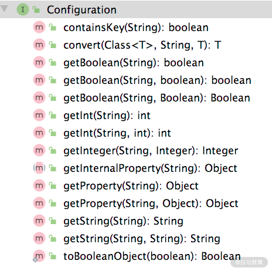
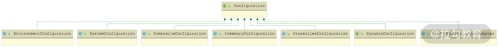
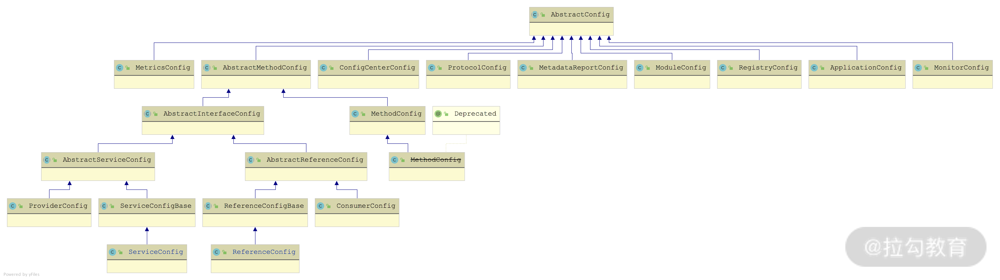
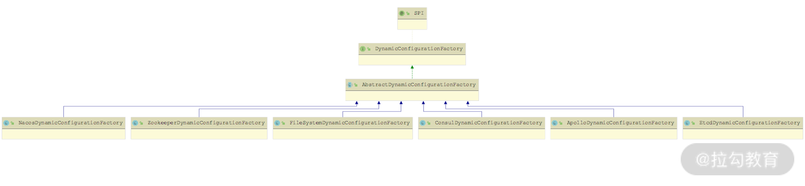
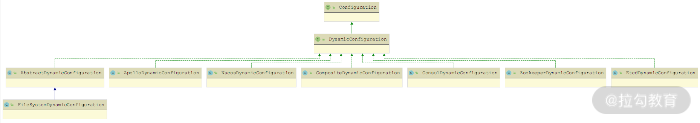
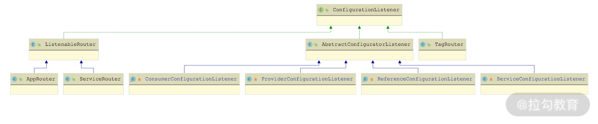

- 00 开篇词 深入掌握 Dubbo 原理与实现，提升你的职场竞争力.md
- 01 Dubbo 源码环境搭建：千里之行，始于足下.md
- 02 Dubbo 的配置总线：抓住 URL，就理解了半个 Dubbo.md
- 03 Dubbo SPI 精析，接口实现两极反转（上）.md
- 04 Dubbo SPI 精析，接口实现两极反转（下）.md
- 05 海量定时任务，一个时间轮搞定.md
- 06 ZooKeeper 与 Curator，求你别用 ZkClient 了（上）.md
- 07 ZooKeeper 与 Curator，求你别用 ZkClient 了（下）.md
- 08 代理模式与常见实现.md
- 09 Netty 入门，用它做网络编程都说好（上）.md
- 10 Netty 入门，用它做网络编程都说好（下）.md
- 11 简易版 RPC 框架实现（上）.md
- 12 简易版 RPC 框架实现（下）.md
- 13 本地缓存：降低 ZooKeeper 压力的一个常用手段.md
- 14 重试机制是网络操作的基本保证.md
- 15 ZooKeeper 注册中心实现，官方推荐注册中心实践.md
- 16 Dubbo Serialize 层：多种序列化算法，总有一款适合你.md
- 17 Dubbo Remoting 层核心接口分析：这居然是一套兼容所有 NIO 框架的设计？.md
- 18 Buffer 缓冲区：我们不生产数据，我们只是数据的搬运工.md
- 19 Transporter 层核心实现：编解码与线程模型一文打尽（上）.md
- 20 Transporter 层核心实现：编解码与线程模型一文打尽（下）.md
- 21 Exchange 层剖析：彻底搞懂 Request-Response 模型（上）.md
- 22 Exchange 层剖析：彻底搞懂 Request-Response 模型（下）.md
- 23 核心接口介绍，RPC 层骨架梳理.md
- 24 从 Protocol 起手，看服务暴露和服务引用的全流程（上）.md
- 25 从 Protocol 起手，看服务暴露和服务引用的全流程（下）.md
- 26 加餐：直击 Dubbo “心脏”，带你一起探秘 Invoker（上）.md
- 27 加餐：直击 Dubbo “心脏”，带你一起探秘 Invoker（下）.md
- 28 复杂问题简单化，代理帮你隐藏了多少底层细节？.md
- 29 加餐：HTTP 协议 + JSON-RPC，Dubbo 跨语言就是如此简单.md
- 30 Filter 接口，扩展 Dubbo 框架的常用手段指北.md
- 31 加餐：深潜 Directory 实现，探秘服务目录玄机.md
- 32 路由机制：请求到底怎么走，它说了算（上）.md
- 33 路由机制：请求到底怎么走，它说了算（下）.md
- 34 加餐：初探 Dubbo 动态配置的那些事儿.md
- 35 负载均衡：公平公正物尽其用的负载均衡策略，这里都有（上）.md
- 36 负载均衡：公平公正物尽其用的负载均衡策略，这里都有（下）.md
- 37 集群容错：一个好汉三个帮（上）.md
- 38 集群容错：一个好汉三个帮（下）.md
- 39 加餐：多个返回值不用怕，Merger 合并器来帮忙.md
- 40 加餐：模拟远程调用，Mock 机制帮你搞定.md
- 41 加餐：一键通关服务发布全流程.md
- 42 加餐：服务引用流程全解析.md
- 43 服务自省设计方案：新版本新方案.md
- 44 元数据方案深度剖析，如何避免注册中心数据量膨胀？.md
- 45 加餐：深入服务自省方案中的服务发布订阅（上）.md
- 46 加餐：深入服务自省方案中的服务发布订阅（下）.md
- 47 配置中心设计与实现：集中化配置 and 本地化配置，我都要（上）.md
- 48 配置中心设计与实现：集中化配置 and 本地化配置，我都要（下）.md
- 49 结束语 认真学习，缩小差距.md
47 配置中心设计与实现：集中化配置 and 本地化配置，我都要（上）
从 2.7.0 版本开始，Dubbo 正式支持配置中心，在服务自省架构中也依赖配置中心完成 Service ID 与 Service Name 的映射。配置中心在 Dubbo 中主要承担两个职责：
- 外部化配置；
- 服务治理，负责服务治理规则的存储与通知。
外部化配置目的之一是实现配置的集中式管理。 目前已经有很多成熟的专业配置管理系统（例如，携程开源的 Apollo、阿里开源的 Nacos 等），Dubbo 配置中心的目的不是再“造一次轮子”，而是保证 Dubbo 能与这些成熟的配置管理系统正常工作。
Dubbo 可以同时支持多种配置来源。在 Dubbo 初始化过程中，会从多个来源获取配置，并按照固定的优先级将这些配置整合起来，实现高优先级的配置覆盖低优先级配置的效果。这些配置的汇总结果将会参与形成 URL，以及后续的服务发布和服务引用。
Dubbo 目前支持下面四种配置来源，优先级由 1 到 4 逐级降低：
- System Properties，即 -D 参数；
- 外部化配置，也就是本课时要介绍的配置中心；
- API 接口、注解、XML 配置等编程方式收到的配置，最终得到 ServiceConfig、ReferenceConfig 等对象；
- 本地 dubbo.properties 配置文件。
Configuration
Configuration 接口是 Dubbo 中所有配置的基础接口，其中定义了根据指定 Key 获取对应配置值的相关方法，如下图所示：

Configuration 接口核心方法
从上图中我们可以看到，Configuration 针对不同的 boolean、int、String 返回值都有对应的 get() 方法，同时还提供了带有默认值的 get() 方法。这些 get *() 方法底层首先调用 getInternalProperty() 方法获取配置值
下图展示了 Dubbo 中提供的 Configuration 接口实现，包括：SystemConfiguration、EnvironmentConfiguration、InmemoryConfiguration、PropertiesConfiguration、CompositeConfiguration、ConfigConfigurationAdapter 和 DynamicConfiguration。下面我们将结合具体代码逐个介绍其实现。

Configuration 继承关系图
SystemConfiguration & EnvironmentConfiguration
SystemConfiguration 是从 Java Properties 配置（也就是 -D 配置参数）中获取相应的配置项，EnvironmentConfiguration 是从使用环境变量中获取相应的配置。两者的 getInternalProperty() 方法实现如下：
public class SystemConfiguration implements Configuration {
public Object getInternalProperty(String key) {
return System.getProperty(key); // 读取-D配置参数
}
}
public class EnvironmentConfiguration implements Configuration {
public Object getInternalProperty(String key) {
String value = System.getenv(key);
if (StringUtils.isEmpty(value)) {
// 读取环境变量中获取相应的配置
value = System.getenv(StringUtils.toOSStyleKey(key));
}
return value;
}
}
InmemoryConfiguration
InmemoryConfiguration 会在内存中维护一个 Map
public class InmemoryConfiguration implements Configuration {
private Map<String, String> store = new LinkedHashMap<>();
@Override
public Object getInternalProperty(String key) {
return store.get(key);
}
// 省略addProperty()等写入store集合的方法
}
PropertiesConfiguration
PropertiesConfiguration 涉及 OrderedPropertiesProvider，其接口的定义如下：
@SPI
public interface OrderedPropertiesProvider {
// 用于排序
int priority();
// 获取Properties配置
Properties initProperties();
}
在 PropertiesConfiguration 的构造方法中，会加载 OrderedPropertiesProvider 接口的全部扩展实现，并按照 priority() 方法进行排序。然后，加载默认的 dubbo.properties.file 配置文件。最后，用 OrderedPropertiesProvider 中提供的配置覆盖 dubbo.properties.file 文件中的配置。PropertiesConfiguration 的构造方法的具体实现如下：
public PropertiesConfiguration() {
// 获取OrderedPropertiesProvider接口的全部扩展名称
ExtensionLoader<OrderedPropertiesProvider> propertiesProviderExtensionLoader = ExtensionLoader.getExtensionLoader(OrderedPropertiesProvider.class);
Set<String> propertiesProviderNames = propertiesProviderExtensionLoader.getSupportedExtensions();
if (propertiesProviderNames == null || propertiesProviderNames.isEmpty()) {
return;
}
// 加载OrderedPropertiesProvider接口的全部扩展实现
List<OrderedPropertiesProvider> orderedPropertiesProviders = new ArrayList<>();
for (String propertiesProviderName : propertiesProviderNames) {
orderedPropertiesProviders.add(propertiesProviderExtensionLoader.getExtension(propertiesProviderName));
}
// 排序OrderedPropertiesProvider接口的扩展实现
orderedPropertiesProviders.sort((OrderedPropertiesProvider a, OrderedPropertiesProvider b) -> {
return b.priority() - a.priority();
});
// 加载默认的dubbo.properties.file配置文件，加载后的结果记录在ConfigUtils.PROPERTIES这个static字段中
Properties properties = ConfigUtils.getProperties();
// 使用OrderedPropertiesProvider扩展实现，按序覆盖dubbo.properties.file配置文件中的默认配置
for (OrderedPropertiesProvider orderedPropertiesProvider :
orderedPropertiesProviders) {
properties.putAll(orderedPropertiesProvider.initProperties());
}
// 更新ConfigUtils.PROPERTIES字段
ConfigUtils.setProperties(properties);
}
在 PropertiesConfiguration.getInternalProperty() 方法中，直接从 ConfigUtils.PROPERTIES 这个 Properties 中获取覆盖后的配置信息。
public Object getInternalProperty(String key) {
return ConfigUtils.getProperty(key);
}
CompositeConfiguration
CompositeConfiguration 是一个复合的 Configuration 对象，其核心就是将多个 Configuration 对象组合起来，对外表现为一个 Configuration 对象。
CompositeConfiguration 组合的 Configuration 对象都保存在 configList 字段中（LinkedList<Configuration> 集合），CompositeConfiguration 提供了 addConfiguration() 方法用于向 configList 集合中添加 Configuration 对象，如下所示：
public void addConfiguration(Configuration configuration) {
if (configList.contains(configuration)) {
return; // 不会重复添加同一个Configuration对象
}
this.configList.add(configuration);
}
在 CompositeConfiguration 中维护了一个 prefix 字段和 id 字段，两者可以作为 Key 的前缀进行查询，在 getProperty() 方法中的相关代码如下：
public Object getProperty(String key, Object defaultValue) {
Object value = null;
if (StringUtils.isNotEmpty(prefix)) { // 检查prefix
if (StringUtils.isNotEmpty(id)) { // 检查id
// prefix和id都作为前缀，然后拼接key进行查询
value = getInternalProperty(prefix + id + "." + key);
}
if (value == null) {
// 只把prefix作为前缀，拼接key进行查询
value = getInternalProperty(prefix + key);
}
} else {
// 若prefix为空，则直接用key进行查询
value = getInternalProperty(key);
}
return value != null ? value : defaultValue;
}
在 getInternalProperty() 方法中，会按序遍历 configList 集合中的全部 Configuration 查询对应的 Key，返回第一个成功查询到的 Value 值，如下示例代码：
public Object getInternalProperty(String key) {
Configuration firstMatchingConfiguration = null;
for (Configuration config : configList) { // 遍历所有Configuration对象
try {
if (config.containsKey(key)) { // 得到第一个包含指定Key的Configuration对象
firstMatchingConfiguration = config;
break;
}
} catch (Exception e) {
logger.error("...");
}
}
if (firstMatchingConfiguration != null) { // 通过该Configuration查询Key并返回配置值
return firstMatchingConfiguration.getProperty(key);
} else {
return null;
}
}
ConfigConfigurationAdapter
Dubbo 通过 AbstractConfig 类来抽象实例对应的配置，如下图所示：

AbstractConfig 继承关系图
这些 AbstractConfig 实现基本都对应一个固定的配置，也定义了配置对应的字段以及 getter/setter() 方法。例如，RegistryConfig 这个实现类就对应了注册中心的相关配置，其中包含了 address、protocol、port、timeout 等一系列与注册中心相关的字段以及对应的 getter/setter() 方法，来接收用户通过 XML、Annotation 或是 API 方式传入的注册中心配置。
ConfigConfigurationAdapter 是 AbstractConfig 与 Configuration 之间的适配器，它会将 AbstractConfig 对象转换成 Configuration 对象。在 ConfigConfigurationAdapter 的构造方法中会获取 AbstractConfig 对象的全部字段，并转换成一个 Map
public ConfigConfigurationAdapter(AbstractConfig config) {
// 获取该AbstractConfig对象中的全部字段与字段值的映射
Map<String, String> configMetadata = config.getMetaData();
metaData = new HashMap<>(configMetadata.size());
// 根据AbstractConfig配置的prefix和id，修改metaData集合中Key的名称
for (Map.Entry<String, String> entry : configMetadata.entrySet()) {
String prefix = config.getPrefix().endsWith(".") ? config.getPrefix() : config.getPrefix() + ".";
String id = StringUtils.isEmpty(config.getId()) ? "" : config.getId() + ".";
metaData.put(prefix + id + entry.getKey(), entry.getValue());
}
}
在 ConfigConfigurationAdapter 的 getInternalProperty() 方法实现中，直接从 metaData 集合中获取配置值即可，如下所示：
public Object getInternalProperty(String key) {
return metaData.get(key);
}
DynamicConfiguration
DynamicConfiguration 是对 Dubbo 中动态配置的抽象，其核心方法有下面三类。
- getProperties()/ getConfig() / getProperty() 方法：从配置中心获取指定的配置，在使用时，可以指定一个超时时间。
- addListener()/ removeListener() 方法：添加或删除对指定配置的监听器。
- publishConfig() 方法：发布一条配置信息。
在上述三类方法中，每个方法都用多个重载，其中，都会包含一个带有 group 参数的重载，也就是说配置中心的配置可以按照 group 进行分组。
与 Dubbo 中很多接口类似，DynamicConfiguration 接口本身不被 @SPI 注解修饰（即不是一个扩展接口），而是在 DynamicConfigurationFactory 上添加了 @SPI 注解，使其成为一个扩展接口。
在 DynamicConfiguration 中提供了 getDynamicConfiguration() 静态方法，该方法会从传入的配置中心 URL 参数中，解析出协议类型并获取对应的 DynamicConfigurationFactory 实现，如下所示：
static DynamicConfiguration getDynamicConfiguration(URL connectionURL) {
String protocol = connectionURL.getProtocol();
DynamicConfigurationFactory factory = getDynamicConfigurationFactory(protocol);
return factory.getDynamicConfiguration(connectionURL);
}
DynamicConfigurationFactory 接口的定义如下：
@SPI("nop")
public interface DynamicConfigurationFactory {
DynamicConfiguration getDynamicConfiguration(URL url);
static DynamicConfigurationFactory getDynamicConfigurationFactory(String name) {
// 根据扩展名称获取DynamicConfigurationFactory实现
Class<DynamicConfigurationFactory> factoryClass = DynamicConfigurationFactory.class;
ExtensionLoader<DynamicConfigurationFactory> loader = getExtensionLoader(factoryClass);
return loader.getOrDefaultExtension(name);
}
}
DynamicConfigurationFactory 接口的继承关系以及 DynamicConfiguration 接口对应的继承关系如下：

DynamicConfigurationFactory 继承关系图

DynamicConfiguration 继承关系图
我们先来看 AbstractDynamicConfigurationFactory 的实现，其中会维护一个 dynamicConfigurations 集合（Map
以 ZookeeperDynamicConfigurationFactory 实现为例，其 createDynamicConfiguration() 方法创建的就是 ZookeeperDynamicConfiguration 对象：
protected DynamicConfiguration createDynamicConfiguration(URL url) {
// 这里创建ZookeeperDynamicConfiguration使用的ZookeeperTransporter就是前文在Transport层中针对Zookeeper的实现
return new ZookeeperDynamicConfiguration(url, zookeeperTransporter);
}
接下来我们再以 ZookeeperDynamicConfiguration 为例，分析 DynamicConfiguration 接口的具体实现。
首先来看 ZookeeperDynamicConfiguration 的核心字段。
- executor（Executor 类型）：用于执行监听器的线程池。
- rootPath（String 类型）：以 Zookeeper 作为配置中心时，配置也是以 ZNode 形式存储的，rootPath 记录了所有配置节点的根路径。
- zkClient（ZookeeperClient 类型）：与 Zookeeper 集群交互的客户端。
- initializedLatch（CountDownLatch 类型）：阻塞等待 ZookeeperDynamicConfiguration 相关的监听器注册完成。
- cacheListener（CacheListener 类型）：用于监听配置变化的监听器。
- url（URL 类型）：配置中心对应的 URL 对象。
在 ZookeeperDynamicConfiguration 的构造函数中，会初始化上述核心字段，具体实现如下：
ZookeeperDynamicConfiguration(URL url, ZookeeperTransporter zookeeperTransporter) {
this.url = url;
// 根据URL中的config.namespace参数(默认值为dubbo)，确定配置中心ZNode的根路径
rootPath = PATH_SEPARATOR + url.getParameter(CONFIG_NAMESPACE_KEY, DEFAULT_GROUP) + "/config";
// 初始化initializedLatch以及cacheListener，
// 在cacheListener注册成功之后，会调用cacheListener.countDown()方法
initializedLatch = new CountDownLatch(1);
this.cacheListener = new CacheListener(rootPath, initializedLatch);
// 初始化executor字段，用于执行监听器的逻辑
this.executor = Executors.newFixedThreadPool(1, new NamedThreadFactory(this.getClass().getSimpleName(), true));
// 初始化Zookeeper客户端
zkClient = zookeeperTransporter.connect(url);
// 在rootPath上添加cacheListener监听器
zkClient.addDataListener(rootPath, cacheListener, executor);
try {
// 从URL中获取当前线程阻塞等待Zookeeper监听器注册成功的时长上限
long timeout = url.getParameter("init.timeout", 5000);
// 阻塞当前线程，等待监听器注册完成
boolean isCountDown = this.initializedLatch.await(timeout, TimeUnit.MILLISECONDS);
if (!isCountDown) {
throw new IllegalStateException("...");
}
} catch (InterruptedException e) {
logger.warn("...");
}
}
在上述初始化过程中，ZookeeperDynamicConfiguration 会创建 CacheListener 监听器。在前面[第 15 课时]中，我们介绍了 dubbo-remoting-zookeeper 对外提供了 StateListener、DataListener 和 ChildListener 三种类型的监听器。这里的 CacheListener 就是 DataListener 监听器的具体实现。
在 CacheListener 中维护了一个 Map
public void dataChanged(String path, Object value, EventType eventType) {
if (eventType == null) {
return;
}
if (eventType == EventType.INITIALIZED) {
// 在收到INITIALIZED事件的时候，表示CacheListener已经成功注册，会释放阻塞在initializedLatch上的主线程
initializedLatch.countDown();
return;
}
if (path == null || (value == null && eventType != EventType.NodeDeleted)) {
return;
}
if (path.split("/").length >= MIN_PATH_DEPTH) { // 对path层数进行过滤
String key = pathToKey(path); // 将path中的"/"替换成"."
ConfigChangeType changeType;
switch (eventType) { // 将Zookeeper中不同的事件转换成不同的ConfigChangedEvent事件
case NodeCreated:
changeType = ConfigChangeType.ADDED;
break;
case NodeDeleted:
changeType = ConfigChangeType.DELETED;
break;
case NodeDataChanged:
changeType = ConfigChangeType.MODIFIED;
break;
default:
return;
}
// 使用ConfigChangedEvent封装触发事件的Key、Value、配置group以及事件类型
ConfigChangedEvent configChangeEvent = new ConfigChangedEvent(key, getGroup(path), (String) value, changeType);
// 从keyListeners集合中获取对应的ConfigurationListener集合，然后逐一进行通知
Set<ConfigurationListener> listeners = keyListeners.get(path);
if (CollectionUtils.isNotEmpty(listeners)) {
listeners.forEach(listener -> listener.process(configChangeEvent));
}
}
}
CacheListener 中调用的监听器都是 ConfigurationListener 接口实现，如下图所示，这里涉及[第 33 课时]介绍的 TagRouter、AppRouter 和 ServiceRouter，它们主要是监听路由配置的变化；还涉及 RegistryDirectory 和 RegistryProtocol 中的四个内部类（AbstractConfiguratorListener 的子类），它们主要监听 Provider 和 Consumer 的配置变化。

ConfigurationListener 继承关系图
这些 ConfigurationListener 实现在前面的课程中已经详细介绍过了，这里就不再重复。ZookeeperDynamicConfiguration 中还提供了 addListener()、removeListener() 两个方法用来增删 ConfigurationListener 监听器，具体实现比较简单，这里就不再展示，你若感兴趣的话可以参考源码进行学习。
介绍完 ZookeeperDynamicConfiguration 的初始化过程之后，我们再来看 ZookeeperDynamicConfiguration 中读取配置、写入配置的相关操作。相关方法的实现如下：
public Object getInternalProperty(String key) {
// 直接从Zookeeper中读取对应的Key
return zkClient.getContent(key);
}
public boolean publishConfig(String key, String group, String content) {
// getPathKey()方法中会添加rootPath和group两部分信息到Key中
String path = getPathKey(group, key);
// 在Zookeeper中创建对应ZNode节点用来存储配置信息
zkClient.create(path, content, false);
return true;
}
总结
本课时我们重点介绍了 Dubbo 配置中心中的多种配置接口。首先，我们讲解了 Configuration 这个顶层接口的核心方法，然后介绍了 Configuration 接口的相关实现，这些实现可以从环境变量、-D 启动参数、Properties文件以及其他配置文件或注解处读取配置信息。最后，我们还着重介绍了 DynamicConfiguration 这个动态配置接口的定义，并分析了以 Zookeeper 为动态配置中心的 ZookeeperDynamicConfiguration 实现。
下一课时，我们将深入介绍 Dubbo 动态配置中心启动的核心流程，记得按时来听课。
© 2019 - 2023 Liangliang Lee. Powered by gin and hexo-theme-book.